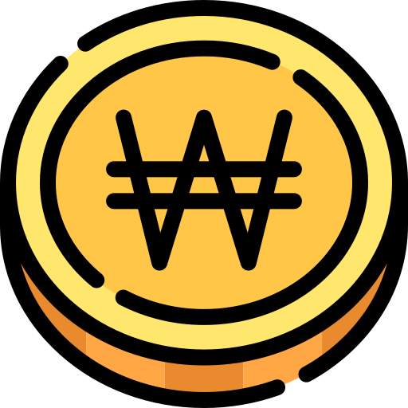

경기도 유일의 벚꽃축제 여주흥천남한강벚꽃축제, 즐겨 봄,느껴 봄, 함께해 봄
여주흥천남한강 벚꽃축제
2024.03.29 ~ 2024.03.31
여주흥천남한강벚꽃축제는 여주시 대표축제는 예로부터 여강길이라 불리던 남한강 일대에 만발한 벚꽃길 중 흥천면 귀백리 일원에는 행사기간 차량을 통제하고 벚꽃 테마로, 야간별빛로 포토존과 특설무대 공연, 체험, 농특산물 및 먹거리부스가 운영이 된다.
[행사내용]
즐겨봄 : 어린이 벚꽃요정 선발대회, 게임하고 상품타고, 여주흥천 농특산물 3종경기, 흥천 주민노래자랑
느껴봄 : 어린이 동시 쓰기대회, 벚꽃길 인생네컷 포토존, 꽃향기 쉼터, 봄손길 체험부스, 봄기운 농특산물 부스, 봄의맛 푸드트럭
함께해봄 : 개막식, 개막축하공연, 봄봄봄 페스티벌, 폐막 인기가수 축하공연

2024.03.29 ~ 2024.03.31
 경기도 여주시 흥천면 귀백리 168-3번지 일원
경기도 여주시 흥천면 귀백리 168-3번지 일원
 무료
여주시 흥천면/여주흥천남한강벚꽃축제위원회

031-887-3875